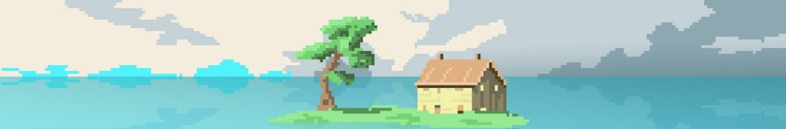
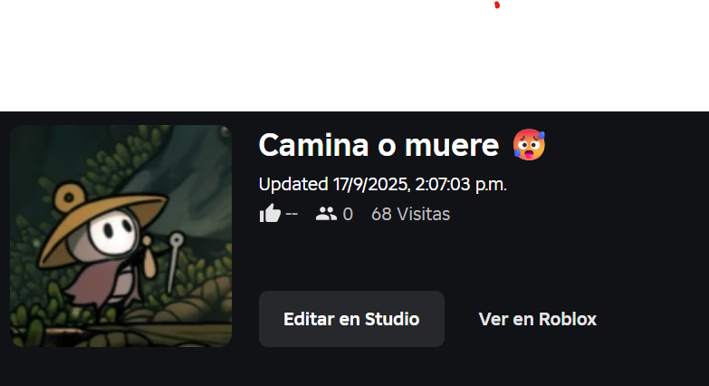

Showcase — Comportamiento de NPC's
Sistema de diálogos, uso de Terrain y sus brochas, e implementación de pistas de audio para dichos diálogos. Los assets mostrados no son propios y pueden encontrarse en la Unity Asset Store.


Desarrollador de software especializado en el ecosistema ServiceNow y programación de videojuegos (C#, Unity). Actualmente enfocado en la consultoría tecnológica y la creación de experiencias interactivas.
Sistema de diálogos, uso de Terrain y sus brochas, e implementación de pistas de audio para dichos diálogos. Los assets mostrados no son propios y pueden encontrarse en la Unity Asset Store.
En colaboración con @_fangfriday, desarrollamos un sistema de partículas de nieve, un shader de agua y un efecto de cámara pixel-art en Unity.
Boss fight desarrollada en Unity con sistema de 4 habilidades: salto, melee, proyectiles venenosos y aura de veneno. Incluye mecánica de enemigos laterales que otorgan inmunidad temporal al ser derrotados.

Experiencia para Roblox en desarrollo bajo el estudio kiwi procedural. Inspirada en «The Long Walk», planeamos lanzarla antes del estreno de la película.